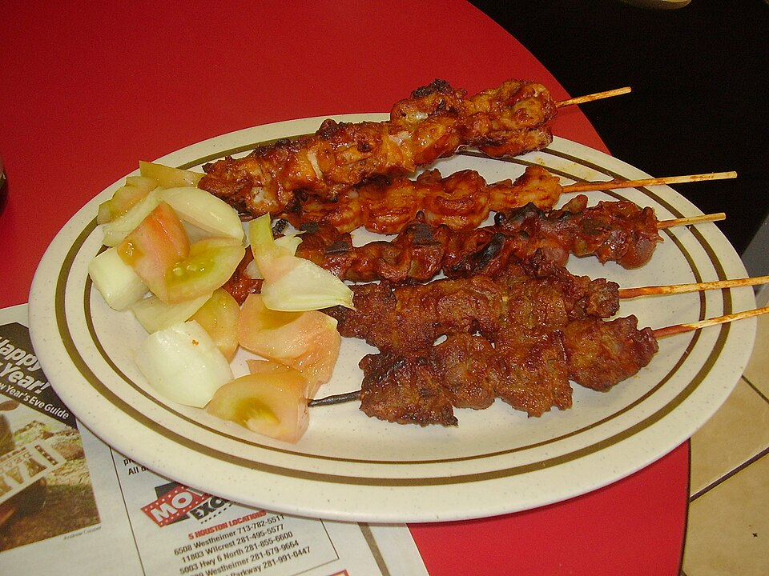

Suya

Description
This meal originates from Western Africa and particulary from the Hausa people in Northern Nigeria but it is common eated by virtually everyone and as a snack
Ingredients
- Peppered grounded groundnut
- Vegetable oil
- Pepper
- Protein Source usally beaf
Steps
- The beaf is first cut very thin after which it is marinated
- The beaf is oiled and roasted
- The peppered grounded groundnut is applied on the cooled oiled beef until it stick to the surface
- This is then roasted again and served